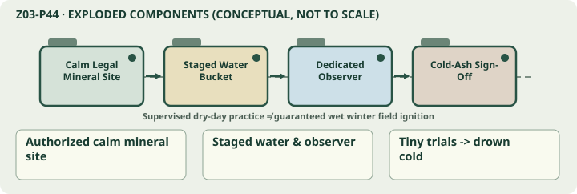

Z03-P44 · Fire and ignition · Adapted historical material
Set up a supervised controlled practice site for ignition training
Practice ignition mechanics safely under controlled non-emergency conditions with zero uncontrolled spread risk.
When it applies · Educational workshops, personal skill rehearsal and evaluating fire-starting gear prior to field reliance.
Equipment · Lawfully authorized cleared mineral-soil pit or metal pan, abundant water bucket, stirring tool, first-aid/burn awareness and supervisor.

Actions
- Schedule skills practice only on low fire-danger days with current legal authorization, calm wind and a cleared mineral-soil ring or fire-safe training tray well clear of dry fuels and structures.[C01, C02, C14, C18]
- Stage full extinguishing water, stirring tool, eye/hand safety discipline and a dedicated safety observer BEFORE unpacking any ignition device or tinder.[C02, C04, T01, ED]
- Keep practice embers tiny, extinguish every trial completely cold in water before moving on and never assume backyard dry-day success guarantees wet winter field ignition.[C04, C12, ED]
Failure recognition · Practicing ferro-rod sparks or bow-drill embers on a wooden porch, dry lawn or indoor garage floor without water staged.[C02, C05, C16]
Verify · Confirm legal permission, calm wind, mineral-soil/metal containment, abundant water and cold-to-touch sign-off at session close.[C01, C02, C04, ED]
Stop or change course · Cancel or shut down training immediately if wind rises, humidity drops into Red Flag conditions, water runs low or any participant loses control of tools or flames.[C01, C04, C18]
Evidence and editorial notes
- C01 · Minnesota DNR · Fire Danger and Burning Restrictions (current web edition; verify at use)
- Section: Fire danger and burning restrictions map and links · Conditions: Current Minnesota location, date and jurisdiction
Support: Check current restrictions and local authority requirements before lighting.
Limitations: Restrictions can change daily with humidity, wind, and drought; verify immediately before use. · Conflicting evidence: None; local jurisdiction always supersedes general notes.
Editorial note: Mandatory legal check before any live fire card. · Specialist reviewer: Fire prevention and local land management
Primary source · checked 2026-11-24 - C02 · USDA Forest Service / Smokey Bear · Smokey Bear’s Campfire Safety Guide (agency PDF)
- Section: Build your campfire; choose a location · Conditions: Where campfires are currently permitted
Support: Use an established fire ring where required or available. Protect the area from nearby combustible materials, avoid windy conditions and keep water ready.
Limitations: Site clearances vary by fuel load, slope, and wind; no universal safe radius fits all terrain. · Conflicting evidence: None; aligns with USFS-FIRE.
Editorial note: Grounds site-selection and ring-preparation procedures. · Specialist reviewer: Fire prevention and land management
Primary source · checked 2026-11-24 - C04 · USDA Forest Service / Smokey Bear · Smokey Bear’s Campfire Safety Guide (agency PDF)
- Section: Maintain and extinguish a campfire · Conditions: Occupied campfire, water and tools available
Support: Stay with the fire. Drown, stir and add water again until cool. Leaving visible embers or merely covering them is unsafe.
Limitations: Deep duff or peat soils can hold smoldering embers underground even after surface ash cools. · Conflicting evidence: None; prohibits dirt-only burial as primary extinguishment.
Editorial note: Enforces drown-stir-feel-cold cycle before site departure. · Specialist reviewer: Fire prevention and land management
Primary source · checked 2026-11-24 - C05 · CPSC · Portable Heaters and Camping Equipment (current web edition)
- Section: Carbon monoxide poisoning from portable camping equipment · Conditions: Tents, campers, vehicles and other enclosed spaces
Support: Fuel-burning camping equipment can lead to fatal carbon monoxide buildup in enclosed spaces.
Limitations: High altitude increases incomplete combustion and CO production. · Conflicting evidence: None; aligns with CDC-CO and NPS guidance.
Editorial note: Hard-stop prohibition against indoor/vestibule/tent combustion. · Specialist reviewer: Carbon monoxide safety and emergency medicine
Primary source · checked 2026-11-24 - C12 · NPS · Forces and Tools (current web edition)
- Section: Background and Procedure > Bow Drill · Conditions: Interpretive demonstration using known materials
Support: Reciprocating motion turns a spindle against a hearth. Friction heats wood dust until it can sustain an ember.
Limitations: Moisture, resinous wood, poor notch geometry, or physical fatigue can prevent ember formation. · Conflicting evidence: Does not guarantee ignition in emergency field conditions; conceptual/supervised training only.
Editorial note: Clearly distinguishes cold mechanism instruction from field-validated emergency ignition. · Specialist reviewer: Fire prevention and mechanism reviewer
Primary source · checked 2026-11-24 - C14 · USDA Forest Service · Know Before You Go: Fire (current web edition)
- Section: Know Before You Go > Extinguish and Site Clearance · Conditions: Authorized outdoor campfire on mineral soil
Support: Clear flammable grass, needles, and twigs down to mineral soil before building a small fire, keep flames away from overhanging branches, and confirm cold ash before leaving.
Limitations: Root systems and organic duff beneath shallow clearing can ignite invisibly. · Conflicting evidence: None; aligns with SMOKEY C02/C04.
Editorial note: Underpins mineral-soil cutaway and underground root-fire failure cards. · Specialist reviewer: Wildland fire prevention
Primary source · checked 2026-11-24 - C16 · CDC · Carbon Monoxide Poisoning Basics (current web edition)
- Section: Carbon Monoxide Poisoning Basics > Sources and Prevention · Conditions: Any enclosed or semi-enclosed structure, garage, porch, tent, or vehicle
Support: Never burn charcoal, operate camp stoves, or run fuel-burning heaters inside homes, garages, tents, or vehicles even with doors or windows partly open.
Limitations: Vent cracks and open garage doors do not prevent lethal CO accumulation. · Conflicting evidence: Refutes dangerous myth that cracking a tent vent or garage door makes indoor combustion safe.
Editorial note: Hard-stop rule across all Z02 ventilation and Z03 combustion cards. · Specialist reviewer: Carbon monoxide safety and emergency medicine
Primary source · checked 2026-11-24 - C18 · NWS · Wildfire Weather Safety (current web edition)
- Section: Wildfire Weather Safety > Red Flag and Wind Conditions · Conditions: Low humidity, dry fuels, and gusty winds
Support: Red Flag Warnings and high wind advisories signal extreme fire-spread potential where embers travel downwind and small sparks rapidly escape containment.
Limitations: Local gusts can exceed forecast averages along ridges and open clearings. · Conflicting evidence: None; reinforces wind-abort threshold before ignition.
Editorial note: Establishes Red Flag / high-wind conditions as automatic no-fire triggers. · Specialist reviewer: Wildland fire safety and meteorology
Primary source · checked 2026-11-24 - T01 · American Red Cross · First Aid Steps (current web edition)
- Section: First Aid Steps > Check the scene; check the person · Conditions: Lay responder in United States; assess safety before contact
Support: Check scene safety, responsiveness, breathing and immediately life-threatening conditions.
Limitations: Lay guidance does not replace advanced clinical or rescue protocols. · Conflicting evidence: None; universal first-response opening gate.
Editorial note: Anchors scene-safety-first rule across Z01. · Specialist reviewer: EMS and wilderness medicine
Primary source · checked 2026-11-24
Source lineage · Smokey Bear guide, USFS fire safety and B008/B010; new manuscript · Classification · Adapted historical material.